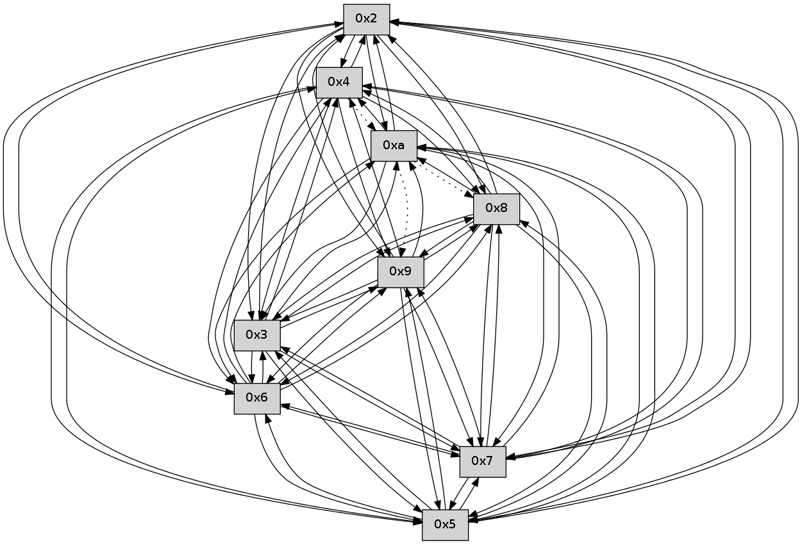

>> << IDX [start] -100 -25 -5 +0 +5 +25 +100 [105.249561071]
 Previous packets
----------------------------------------------------------------------
100.520769 beacon01(faad) #0 coord=01,02,03,04,05,06,07,0a,09,08 cycle=688.0ms assoc
-- color-indic=0 64 90 d2
100.530752 beacon02(faad) #0 coord=01,02,03,04,05,06,07,0a,09,08 cycle=688.0ms assoc 64 03 e3
100.540752 beacon03(faad) #0 coord=01,02,03,04,05,06,07,0a,09,08 cycle=688.0ms assoc 64 79 ae
100.550751 beacon04(faad) #0 coord=01,02,03,04,05,06,07,0a,09,08 cycle=688.0ms assoc 64 0e 44
100.560752 beacon05(faad) #0 coord=01,02,03,04,05,06,07,0a,09,08 cycle=688.0ms assoc 64 74 09
100.570751 beacon06(faad) #0 coord=01,02,03,04,05,06,07,0a,09,08 cycle=688.0ms assoc 64 fa de
100.580751 beacon07(faad) #0 coord=01,02,03,04,05,06,07,0a,09,08 cycle=688.0ms assoc 64 80 93
100.590757 beacon0a(faad) #0 coord=01,02,03,04,05,06,07,0a,09,08 cycle=688.0ms assoc 64 f1 98
100.600758 beacon09(faad) #0 coord=01,02,03,04,05,06,07,0a,09,08 cycle=688.0ms assoc 64 7f 4f
100.610758 beacon08(faad) #0 coord=01,02,03,04,05,06,07,0a,09,08 cycle=688.0ms assoc 64 05 02
100.621888 [Hello(10): seq=1 sym=3,2,5 asym=6,9,8 sysInfo= stat=3:1,0,0,0/2:1,0,0,0/5:1,0,0,0/6:0,0,0,0/9:0,0,0,0/8:0,0,0,0]
100.624165 [Hello(7): seq=70 sym=2,3,5,6,4,8,9 asym=10 sysInfo= stat=2:2,0,0,0/3:14,0,0,0/5:12,0,0,0/6:9,0,0,0/4:14,0,0,0/8:6,0,0,0/9:5,0,0,0/10:0,0,0,0]
100.627794 [Hello(6): seq=70 sym=2,3,5,4,7,9,8,10 sysInfo= stat=2:13,0,0,0/3:15,0,0,0/5:12,0,0,0/4:14,0,0,0/7:3,0,0,0/9:4,0,0,0/8:5,0,0,0/10:0,0,0,0]
100.630460 [Hello(8): seq=12 sym=5,2,3,4,7,6,9 sysInfo= stat=5:9,0,0,0/2:10,0,0,0/3:12,0,0,0/4:11,0,0,0/7:3,0,0,0/6:5,0,0,0/9:3,0,0,0]
100.635093 [Hello(9): seq=12 sym=5,2,3,4,7,6,8 sysInfo= stat=5:11,0,0,0/2:9,0,0,0/3:10,0,0,0/4:12,0,0,0/7:4,0,0,0/6:5,0,0,0/8:5,0,0,0]
----------------------------------------------------------------------
101.308903 beacon01(faad) #0 coord=01,02,03,04,05,06,07,0a,09,08 cycle=688.0ms assoc
-- color-indic=0 64 54 dc
101.318886 beacon02(faad) #0 coord=01,02,03,04,05,06,07,0a,09,08 cycle=688.0ms assoc 64 c7 ed
101.328885 beacon03(faad) #0 coord=01,02,03,04,05,06,07,0a,09,08 cycle=688.0ms assoc 64 bd a0
101.338885 beacon04(faad) #0 coord=01,02,03,04,05,06,07,0a,09,08 cycle=688.0ms assoc 64 ca 4a
101.348886 beacon05(faad) #0 coord=01,02,03,04,05,06,07,0a,09,08 cycle=688.0ms assoc 64 b0 07
101.358884 beacon06(faad) #0 coord=01,02,03,04,05,06,07,0a,09,08 cycle=688.0ms assoc 64 3e d0
101.368886 beacon07(faad) #0 coord=01,02,03,04,05,06,07,0a,09,08 cycle=688.0ms assoc 64 44 9d
101.378890 beacon0a(faad) #0 coord=01,02,03,04,05,06,07,0a,09,08 cycle=688.0ms assoc 64 35 96
101.388892 beacon09(faad) #0 coord=01,02,03,04,05,06,07,0a,09,08 cycle=688.0ms assoc 64 bb 41
101.398892 beacon08(faad) #0 coord=01,02,03,04,05,06,07,0a,09,08 cycle=688.0ms assoc 64 c1 0c
101.414008 [Hello(5): seq=71 sym=7,6,4,2,3,9,8,10 sysInfo= stat=7:2,0,0,0/6:15,0,0,0/4:6,0,0,0/2:4,0,0,0/3:4,0,0,0/9:12,0,0,0/8:10,0,0,0/10:1,0,0,0]
101.416405 [Hello(4): seq=71 sym=5,7,6,2,3,9,8 asym=10 sysInfo= stat=5:14,0,0,0/7:13,0,0,0/6:6,0,0,0/2:12,0,0,0/3:15,0,0,0/9:12,0,0,0/8:10,0,0,0/10:1,0,0,0]
----------------------------------------------------------------------
102.097033 beacon01(faad) #0 coord=01,02,03,04,05,06,07,0a,09,08 cycle=688.0ms assoc
-- color-indic=0 64 e8 d9
102.107015 beacon02(faad) #0 coord=01,02,03,04,05,06,07,0a,09,08 cycle=688.0ms assoc 64 7b e8
102.117015 beacon03(faad) #0 coord=01,02,03,04,05,06,07,0a,09,08 cycle=688.0ms assoc 64 01 a5
102.127017 beacon04(faad) #0 coord=01,02,03,04,05,06,07,0a,09,08 cycle=688.0ms assoc 64 76 4f
102.137017 beacon05(faad) #0 coord=01,02,03,04,05,06,07,0a,09,08 cycle=688.0ms assoc 64 0c 02
102.147016 beacon06(faad) #0 coord=01,02,03,04,05,06,07,0a,09,08 cycle=688.0ms assoc 64 82 d5
102.157016 beacon07(faad) #0 coord=01,02,03,04,05,06,07,0a,09,08 cycle=688.0ms assoc 64 f8 98
102.167020 beacon0a(faad) #0 coord=01,02,03,04,05,06,07,0a,09,08 cycle=688.0ms assoc 64 89 93
102.177022 beacon09(faad) #0 coord=01,02,03,04,05,06,07,0a,09,08 cycle=688.0ms assoc 64 07 44
102.187020 beacon08(faad) #0 coord=01,02,03,04,05,06,07,0a,09,08 cycle=688.0ms assoc 64 7d 09
102.198136 [Hello(9): seq=13 sym=5,2,3,4,7,6,8 sysInfo= stat=5:12,0,0,0/2:10,0,0,0/3:10,0,0,0/4:13,0,0,0/7:4,0,0,0/6:5,0,0,0/8:5,0,0,0]
102.200376 [Hello(8): seq=13 sym=5,2,3,4,7,6,9 sysInfo= stat=5:10,0,0,0/2:11,0,0,0/3:12,0,0,0/4:12,0,0,0/7:3,0,0,0/6:5,0,0,0/9:4,0,0,0]
102.203754 [Hello(7): seq=71 sym=2,3,5,6,4,8,9 asym=10 sysInfo= stat=2:3,0,0,0/3:14,0,0,0/5:13,0,0,0/6:10,0,0,0/4:15,0,0,0/8:7,0,0,0/9:6,0,0,0/10:0,0,0,0]
102.206429 [Hello(6): seq=71 sym=2,3,5,4,7,9,8,10 sysInfo= stat=2:13,0,0,0/3:15,0,0,0/5:13,0,0,0/4:15,0,0,0/7:3,0,0,0/9:5,0,0,0/8:6,0,0,0/10:0,0,0,0]
102.210438 [Hello(10): seq=2 sym=6,3,2,5,7,4 asym=9,8 sysInfo= stat=6:1,0,0,0/3:2,0,0,0/2:1,0,0,0/5:2,0,0,0/7:0,0,0,0/4:0,0,0,0/9:1,0,0,0/8:1,0,0,0]
----------------------------------------------------------------------
102.885166 beacon01(faad) #0 coord=01,02,03,04,05,06,07,0a,09,08 cycle=688.0ms assoc
-- color-indic=0 64 dc c1
102.895149 beacon02(faad) #0 coord=01,02,03,04,05,06,07,0a,09,08 cycle=688.0ms assoc 64 4f f0
102.905147 beacon03(faad) #0 coord=01,02,03,04,05,06,07,0a,09,08 cycle=688.0ms assoc 64 35 bd
102.915148 beacon04(faad) #0 coord=01,02,03,04,05,06,07,0a,09,08 cycle=688.0ms assoc 64 42 57
102.925147 beacon05(faad) #0 coord=01,02,03,04,05,06,07,0a,09,08 cycle=688.0ms assoc 64 38 1a
102.935149 beacon06(faad) #0 coord=01,02,03,04,05,06,07,0a,09,08 cycle=688.0ms assoc 64 b6 cd
102.945149 beacon07(faad) #0 coord=01,02,03,04,05,06,07,0a,09,08 cycle=688.0ms assoc 64 cc 80
102.955155 beacon0a(faad) #0 coord=01,02,03,04,05,06,07,0a,09,08 cycle=688.0ms assoc 64 bd 8b
102.965154 beacon09(faad) #0 coord=01,02,03,04,05,06,07,0a,09,08 cycle=688.0ms assoc 64 33 5c
102.975155 beacon08(faad) #0 coord=01,02,03,04,05,06,07,0a,09,08 cycle=688.0ms assoc 64 49 11
102.993441 [Hello(2): seq=72 sym=4,5,7,6,3,9,8,10 sysInfo= stat=4:14,0,0,0/5:5,0,0,0/7:7,0,0,0/6:15,0,0,0/3:0,0,0,0/9:11,0,0,0/8:11,0,0,0/10:2,0,0,0]
----------------------------------------------------------------------
103.673298 beacon01(faad) #0 coord=01,02,03,04,05,06,07,0a,09,08 cycle=688.0ms assoc
-- color-indic=0 64 60 c4
103.683280 beacon02(faad) #0 coord=01,02,03,04,05,06,07,0a,09,08 cycle=688.0ms assoc 64 f3 f5
103.693281 beacon03(faad) #0 coord=01,02,03,04,05,06,07,0a,09,08 cycle=688.0ms assoc 64 89 b8
103.703282 beacon04(faad) #0 coord=01,02,03,04,05,06,07,0a,09,08 cycle=688.0ms assoc 64 fe 52
103.713282 beacon05(faad) #0 coord=01,02,03,04,05,06,07,0a,09,08 cycle=688.0ms assoc 64 84 1f
103.723282 beacon06(faad) #0 coord=01,02,03,04,05,06,07,0a,09,08 cycle=688.0ms assoc 64 0a c8
103.733284 beacon07(faad) #0 coord=01,02,03,04,05,06,07,0a,09,08 cycle=688.0ms assoc 64 70 85
103.743286 beacon0a(faad) #0 coord=01,02,03,04,05,06,07,0a,09,08 cycle=688.0ms assoc 64 01 8e
103.753285 beacon09(faad) #0 coord=01,02,03,04,05,06,07,0a,09,08 cycle=688.0ms assoc 64 8f 59
103.763287 beacon08(faad) #0 coord=01,02,03,04,05,06,07,0a,09,08 cycle=688.0ms assoc 64 f5 14
103.774735 [Hello(8): seq=14 sym=5,2,3,4,7,6,9,10 sysInfo= stat=5:11,0,0,0/2:12,0,0,0/3:12,0,0,0/4:12,0,0,0/7:4,0,0,0/6:6,0,0,0/9:4,0,0,0/10:0,0,0,0]
103.779007 [Hello(6): seq=72 sym=2,3,5,4,7,9,8,10 sysInfo= stat=2:14,0,0,0/3:15,0,0,0/5:13,0,0,0/4:15,0,0,0/7:3,0,0,0/9:5,0,0,0/8:6,0,0,0/10:1,0,0,0]
103.781878 [Hello(7): seq=72 sym=2,3,5,6,4,8,9,10 sysInfo= stat=2:4,0,0,0/3:15,0,0,0/5:13,0,0,0/6:11,0,0,0/4:15,0,0,0/8:7,0,0,0/9:6,0,0,0/10:1,0,0,0]
103.785067 [Hello(10): seq=3 sym=6,3,2,5,7,4 asym=9,8 sysInfo= stat=6:1,0,0,0/3:3,0,0,0/2:2,0,0,0/5:2,0,0,0/7:0,0,0,0/4:0,0,0,0/9:1,0,0,0/8:1,0,0,0]
103.789366 [Hello(9): seq=14 sym=5,2,3,4,7,6,8,10 sysInfo= stat=5:13,0,0,0/2:11,0,0,0/3:10,0,0,0/4:13,0,0,0/7:5,0,0,0/6:6,0,0,0/8:6,0,0,0/10:0,0,0,0]
----------------------------------------------------------------------
104.461428 beacon01(faad) #0 coord=01,02,03,04,05,06,07,0a,09,08 cycle=688.0ms assoc
-- color-indic=0 64 a4 ca
104.471410 beacon02(faad) #0 coord=01,02,03,04,05,06,07,0a,09,08 cycle=688.0ms assoc 64 37 fb
104.481410 beacon03(faad) #0 coord=01,02,03,04,05,06,07,0a,09,08 cycle=688.0ms assoc 64 4d b6
104.491412 beacon04(faad) #0 coord=01,02,03,04,05,06,07,0a,09,08 cycle=688.0ms assoc 64 3a 5c
104.501412 beacon05(faad) #0 coord=01,02,03,04,05,06,07,0a,09,08 cycle=688.0ms assoc 64 40 11
104.511413 beacon06(faad) #0 coord=01,02,03,04,05,06,07,0a,09,08 cycle=688.0ms assoc 64 ce c6
104.521412 beacon07(faad) #0 coord=01,02,03,04,05,06,07,0a,09,08 cycle=688.0ms assoc 64 b4 8b
104.531419 beacon0a(faad) #0 coord=01,02,03,04,05,06,07,0a,09,08 cycle=688.0ms assoc 64 c5 80
104.541416 beacon09(faad) #0 coord=01,02,03,04,05,06,07,0a,09,08 cycle=688.0ms assoc 64 4b 57
104.551418 beacon08(faad) #0 coord=01,02,03,04,05,06,07,0a,09,08 cycle=688.0ms assoc 64 31 1a
104.562556 [Hello(5): seq=73 sym=7,6,4,2,3,9,8,10 sysInfo= stat=7:4,0,0,0/6:1,0,0,0/4:7,0,0,0/2:5,0,0,0/3:4,0,0,0/9:14,0,0,0/8:12,0,0,0/10:3,0,0,0]
104.565238 [Hello(2): seq=73 sym=4,5,7,6,3,9,8,10 sysInfo= stat=4:14,0,0,0/5:5,0,0,0/7:8,0,0,0/6:0,0,0,0/3:0,0,0,0/9:12,0,0,0/8:12,0,0,0/10:3,0,0,0]
104.573704 [Hello(3): seq=73 sym=5,7,6,4,2,8,9,10 sysInfo= stat=5:11,0,0,0/7:0,0,0,0/6:5,0,0,0/4:10,0,0,0/2:15,0,0,0/8:14,0,0,0/9:11,0,0,0/10:3,0,0,0]